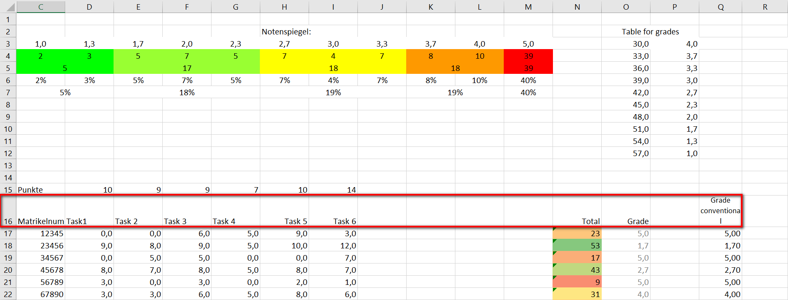
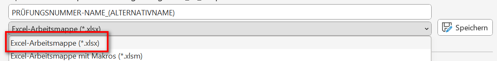
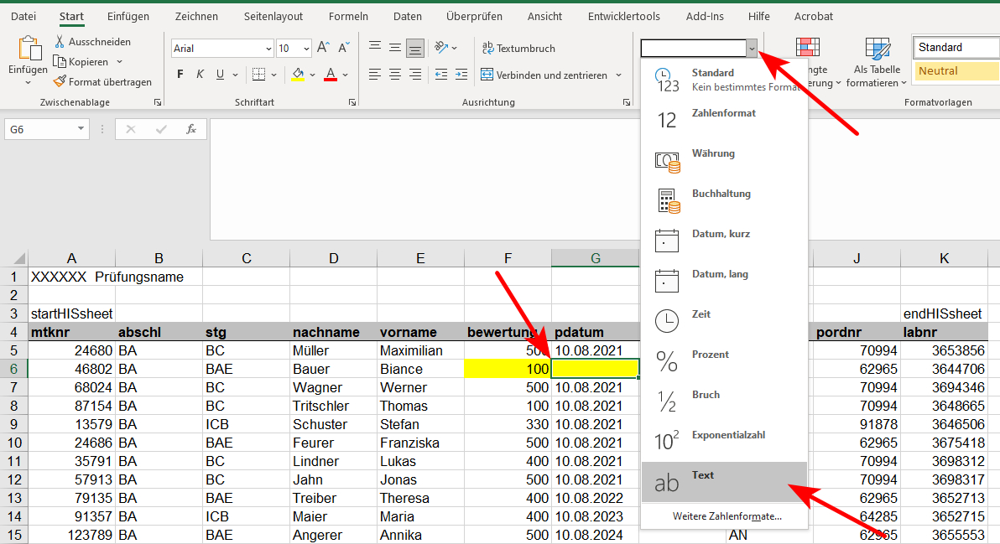

grades_to_hisqis
Kann die Noten aus einer eigens erstellten Excel-Tabelle in den Export von HisQis eintragen, sodass dieser direkt hochgeladen werden kann, um die Noten einzuspielen.
Anleitung
Zuerst auf HisQis anmelden, die Prüfung auswählen und auf der Seite in der die Tabelle angezeigt wird ganz nach unten Scrollen und den Button
[Excel-Exportdrücken Es sollte eine Datei mit dem Namensschemaprf_XXXXXX_XXXXX_1.xlsherunterladen werden; Diese Datei ist die im Programm als HisQis-Datei bezeichnete Datei
Anschließend öffnen Sie das Programm grades_to_hisqis
Bitte von HisQis heruntergeladene Export-Datei (XLSX) auswählen<<ENTER-Taste drücken um Dialog zu öffnen>>==> Drücken Sie die ENTER-Taste und wählen Sie in dem sich öffnenden Dialog die Datei, die Sie gerade aus HisQis heruntergeladen haben (die
PRÜFUNGSNUMMER-NAME_(ALTERNATIVNAME).xlsx)xxxxxxxxxxBitte eigene Datei auswählen<<ENTER-Taste drücken um Dialog zu öffnen>>==> Wählen Sie nun Ihre eigene Excel-Datei aus, die die Matr.-Nr. und die Noten enthält (Achtung, es wird nur XLSX unterstützt!)
Ihre Excel-Datei wird daraufhin eingelesen.
 x
xIhre Excel-Datei enhält folgende Tabellenblätter:0 Noten1 Sonstiges2 Tabelle3Welche Nummer (links) trägt das Tabellenblatt, das die Noten enhält?Sollen diese mehrere Tabellenblätter enthalten (in diesem Beispiel Noten, Sonstiges und Tabelle3) fragt Sie das Programm, in welcher dieser Blätter sich die Noten befinden.
Geben Sie daraufhin die Nummer die sich links befindet an, in diesem Beispiel die 0 bei Noten.
Danach wird das Excel-Blatt eingelesen. 
xxxxxxxxxx0 1 2 ... 7 ... 15 160 WS 20/21 NaN NaN ... NaN ... NaN NaN1 Management Science NaN NaN ... Notenspiegel: ... NaN NaN2 NaN NaN 1 ... 2.7 ... 4.0 NaN3 Schnitt NaN 2 ... 7 ... 3.7 NaN4 3.695876 NaN 5 ... 18 ... 3.3 NaN5 NaN NaN 0.020619 ... 0.072165 ... 3.0 NaN6 NaN NaN 0.051546 ... 0.185567 ... 2.7 NaN7 Durchfallquote NaN NaN ... NaN ... 2.3 NaN8 0.410526 NaN NaN ... NaN ... 2.0 NaN9 NaN NaN NaN ... NaN ... 1.7 NaN10 NaN NaN NaN ... NaN ... 1.3 NaN11 NaN NaN NaN ... NaN ... 1.0 NaN12 NaN NaN NaN ... NaN ... NaN NaN13 NaN NaN NaN ... NaN ... NaN NaN14 NaN NaN Punkte ... 10 ... NaN NaN15 NaN NaN Matrikelnummer ... Task 5 ... NaN Grade conventional16 NaN NaN 87081 ... 9 ... NaN 5In welcher Zeilenzahl (links) befindet sich der Tabellenkopf in der oben angezeigten Tabelle?Achtung: Sie müssen zur Bedienung des Programms Ihre Excel-Datei mit den Noten nicht öffnen, der Auszug dient oben nur zur Illustration und zum besseren Verständnis!
Wie im oberen Beispiel ersichtlich, enthält das Excel-Blatt noch einige weitere Informationen im Kopf, bevor die eigentliche Liste/Tabelle mit den Noten beginnt. Die eigentlich Liste/Tabelle beginnt wie in rot markiert in der Excel-Zeile 16.
Sie müssen nun diese Zeile in der verkürzten Ausgabe des Programms suchen und angeben. In diesem Beispiel handelt es sich hier um die Zeile 15, die Sie daran erkennen können, dass sich die Zelle Matrikelnummer und Grade conventional in ihr befinden.
Tipp: Diese Zeilennummer stimmt immer mit der Excel Zeile -1 (16-1=15) überein, achten Sie jedoch darauf, dass dies nur hier so ist, für die anderen Zeilenzahlen die das Programm abfrägt stimmt diese Regel nicht mehr!
Anschließend müssen Sie dem Programm helfen Ihre Spalten mit denen der HisQis-Datei abzugleichen.
xxxxxxxxxxIhre Tabelle enhält folgende Spalten:0 Unnamed: 01 Unnamed: 12 Matrikelnummer3 Task14 Task 25 Task 36 Task 47 Task 58 Task 69 Unnamed: 910 Unnamed: 1011 Unnamed: 1112 Unnamed: 1213 Total14 Grade15 Unnamed: 1516 Grade conventionalDiese müssen Sie den Spalten von HisQis zuordnen.Hierzu fragt das Programm die einzelnen benötigten Spalten ab. Geben Sie dabei immer die Nummer an, die Sie ganz links in der Ausgabe des Programms sehen.
Matr.-Nr.-Spalte angeben
x
Was ist die Nummer (links) Ihrer Spalte für Matrikelnummer (in HisQis: "Matrikelnummer")?In diesem Beispiel 2, da die mit Matrikelnummer benannte Spalte die Matr.-Nr. enthält.
Noten-Spalte angeben
x
Was ist die Nummer (links) Ihrer Spalte für Leistung/Bewertung/Note (in HisQis: "Leistung")?In diesem Beispiel 16 (oder alternativ 14), da die Spalte Grade conventional die Noten enthält (bzw. alternativ die als Grade benannte Spalte)
Prüfungsdatum -- AKTUELL DEAKTIVIERT!
xxxxxxxxxxHat Ihre Tabelle eine Prüfungsdatum-Spalte (in HisQis: "pdatum")? [1 = ja, 0 = nein]Anschließend wird noch abgefragt, ob Ihre Tabelle eine Spalte enthält, in der sich das Prüfungsdatum befindet (was z.B. bei Seminarabgaben häufiger der Fall ist). Falls ja wählen Sie 1, falls nein, wählen Sie 0. Sollten Sie 0 gewählt haben, können Sie das Prüfungsdatum per Hand eingeben.
xxxxxxxxxxBitte geben Sie den Festwert für Prüfungsdatum (in HisQis: "pdatum") ein:Tipp: Sollten Studierende die Prüfungsleistung nicht angetreten haben findet sich in der Tabelle in HisQis (sowohl online wie in der HisQis-Excel-Export-Datei) bereits das Prüfungsdatum, das Sie so übernehmen können
Anschließend ist anzugeben, wo sich die letzte Zeile der eigentlichen Tabelle befindet. (Dies ist normalerweise zwar die letzte Zeile, jedoch beinhalten manche Excel-Vorlagen noch weitere Zeilen die mit Nullen gefüllt sind, die jedoch nicht vom Programm berücksichtigt werden sollen)
x
Matrikelnummer Task1 ... Grade conventional93 98765 3 ... 1,793 87654 3 ... 3,394 76543 9 ... 5,095 65432 7 ... 3,096 54321 0 ... 2,3Bei welcher Zeilenzahl (links) endet der Inhalt der oben angezeigte Tabelle?Geben Sie hier die letzte Zeilenummer an, die links angezeigt wird, die noch Noten enthält. In diesem Beispiel 96.
Matr.-Nr. stimmen ggf. nicht überein.
xxxxxxxxxx╔══════════════════════════════════════════════════════════════════════╗║ WARNUNG!!! ║║ ---------- ║║ Matrikelnummern stimmen nicht überein! ║║ ║║ Zusätzliche in HisQis-Datei: 24680, 46802, 68024 ║║ Zusätzliche in eigener Datei: 13579, 24686, 35791, 57913 ║╚══════════════════════════════════════════════════════════════════════╝Hier zunächst als Erklärung:
Zusätzliche Matr.-Nr. in der HisQis-Datei sind in der Regel kein Problem, die sind meist die Studierenden, die nicht zur Prüfung angetreten sind.
Eher problematisch sind die überschüssigen Nummern in Ihrer eigenen Datei. Hierbei handelt es sich normalerweise um falsch eingetippte Matr.-Nr. oder ein Student hat sich unter einer anderen Prüfungsnummer angemeldet, dies müssen Sie manuell überprüfen.
Achtung: Sollten Sie in Ihrer eigenen Datei z.B. einen Tippfehler bei der Matr.-Nr. ausbessern reicht es nicht die Excel-Datei abzuspeichern, sondern Sie müssen das Programm daraufhin schließen und nochmals neu Starten (= bei Schritt 2 beginnen.)
Optionen:
xxxxxxxxxxWie soll hiermit verfahren werden?0 Nur die Matrikelnummern der HisQis-Datei berücksichtigen1 Nur die Matrikelnummern der eigenen Datei berücksichtigen2 Nur die Matrikelnummern berücksichtigen, die in beiden Dateien enthalten sind3 Die Matrikelnummern aus beiden Dateien berücksichtigen4 Mehr Details anzeigenGenerell empfiehlt es sich immer, noch einen kurzen Blick auf die Unstimmigkeiten zu werfen, indem man 4 wählt. Daraufhin werden diese entsprechenden Tabellenzeilen genauer aufgelistet
Zusätzliche Matr.-Nr. in der HisQis-Datei
xxxxxxxxxxZusätzlich in HisQis-Datei:===========================mtknr nachname vorname bewertung pstatus2 24680 Müller Maximilian 500.0 NB4 46802 Bauer Biance NaN AN5 68024 Wagner Werner 500.0 NBHier sieht man, dass 24680 sowie 68024 die genannten Fälle sind, die bereits als NB = nicht bestanden eingetragen sind. In der Online-Version von HisQis sieht man darüber hinaus, dass diese (normalerweise) die Studierenden sind, die gar nicht erst zur Prüfung angetreten sind.
Die 46802 hingegen wird unter Bewertung als NaN geführt. Achtung, dies entspricht nicht NAN (das sich wenn dann auch in der Spalte pstatus finden würde) sondern bedeutet mit kleinem a Not a Number und deutet auf eine leere Zelle hin. Gründe wieso diese Matr.-Nr. überschüssig in der HisQis-Datei ist können vielschichtig sein. Oft handelt es sich einfach um einen Tippfehler, weil z.B. die Matr.-Nr. 24686, die in der eigenen Datei zusätzlich vorhanden ist einfach einen Tippfehler enthält und die letzte Ziffer eine 0 hätte sein sollen. Alternativ kann es auch vorkommen, dass wegen Corona eine mündliche Prüfung für die 24686 durchgeführt wurde und Sie hier eine separate Tabelle führen (hier empfiehlt es sich entweder diese Matr.-Nr. dann noch zu Ihrer Tabelle hinzuzufügen, oder Sie fügen die Note sowie das Datum vor dem Upload in HisQis in die Upload-Datei manuell hinzu; siehe unten)
Zusätzliche Matr.-Nr. in der eigenen Datei
xxxxxxxxxxZusätzlich in eigener Datei:============================mtknr Task1 ... bewertung pdatum93 13579 3 ... 1,0 1.1.202093 24686 3 ... 3,3 1.1.202094 35791 9 ... 5,0 1.1.202095 57913 7 ... 4,0 1.1.2020Hier können Sie dann ggf. noch nach Tippfehlern suchen (wie angeführt könnte z.B. die 24686 die 24680 sein) oder ggf. weitere Fehler oder Unstimmigkeiten beheben.
Anschließend müssen Sie sich für eine der folgenden Optionen entscheiden, um die Unstimmigkeiten adäquat zu behandeln:
xxxxxxxxxx0 Nur die Matrikelnummern der HisQis-Datei berücksichtigen1 Nur die Matrikelnummern der eigenen Datei berücksichtigen2 Nur die Matrikelnummern berücksichtigen, die in beiden Dateien enthalten sind3 Die Matrikelnummern aus beiden Dateien berücksichtigen4 Mehr Details anzeigen0 ist die Standardeinstellung und behält nur genau die Matr.-Nr., die sich auch in der HisQis-Datei befinden. Sie sollten normalerweise diese Option wählen. Daraufhin werden die zusätzlichen Matr.-Nr. in Ihrer Datei (im Beispiel 13579, 24686, 35791 und 57913) nicht berücksichtigt.
Bei 1 hier werden nur die Matr.-Nr. behalten, die in Ihrer eigenen Datei vorhanden sind. Dementsprechend werden die zusätzlichen Matr.-Nr. in der HisQis-Datei (im Beispiel 24680, 46802 und 68024) nicht berücksichtigt.
Bei 2 hier werden nur die Matr.-Nr. behalten, die sich in beiden Dateien befinden. Es werden also alle zusätzlichen Matr.-Nr. der eigenen und auch der HisQis-Datei (im Beispiel 13579, 24686, 35791, 57913, 24680, 46802 und 68024) nicht berücksichtigt.
Bei 3 werden alle Matr.-Nr. mit berücksichtigt, die Upload-Datei enthält damit die zusätzlichen Matr.-Nr. der eigenen und auch der HisQis-Datei (im Beispiel 13579, 24686, 35791, 57913, 24680, 46802 und 68024)
Ggf. enthält die vom Programm zusammengebaute Tabelle weiterhin leere Zellen, insbesondere in der Spalte für die Bewertung bzw. die Note.
xxxxxxxxxxBewertung/Note-Spalte (in HisQis: "bewertung") enthälte leere Werte! Wie soll mit diesen verfahren werden?0 Ignorieren1 Durch "RT" (Rüccktritt QIS-Anmeldung) ersetzen2 Durch "NAN" (Nicht angetreten N. 5,0/0 Pkt.) ersetzen3 Durch "ATT" (Rücktritt mit Attest (nicht gezählter Versuch)) ersetzen4 Durch "KNA" (Nicht angetreten (nicht gezählter Versuch)) ersetzenIm Beispiel oben wurde dies normalerweise durch die Matr.-Nr. 46802 ausgelöst, die wie oben beschrieben ein NaN (= leere Zelle) aufweist.
Dies können Sie direkt als 1 RT = Rücktritt, 2 NAN = nicht angetreten, 3 ATT = Rücktritt mit Attest oder 4 KNA = Nicht gezählter Antrittsversuch wegen Corona füllen lassen. Es empfiehlt sich aber, dies zu ignorieren und 0 zu wählen (kontrollieren Sie dann am besten die Upload-Datei noch ganz zum Schluss, leere Zellen sind in dieser gelb markiert.)
Speicherort für Upload-Datei
xxxxxxxxxxErgebnis direkt in HisQis-Datei schreiben? [1 = ja, 0 = nein / Kopie anlegen]Um die Upload-Datei zu schreiben, können Sie entweder mit 1 die von HisQis heruntergeladene HisQis-Datei direkt überschreiben lassen, oder sie wählen 0 um eine Kopie anzulegen und die von HisQis heruntergeladene Datei nicht zu überschreiben.
Sollten Sie 0 gewählt haben, werden Sie nach dem Speicherort gefragt (mit ENTER-Taste bestätigen), wobei Ihnen hier bereits der Dateiname nach dem Schema
PRÜFUNGSNUMMER-NAME_(ALTERNATIVNAME).xlsxvorgeschlagen wirdxxxxxxxxxxBitte Speicherziel für Upload-Datei auswählen<<ENTER-Taste drücken um Dialog zu öffnen>>Anpassung des Dateiformats
Das neue EXA unterstützt nur noch das XLSX-Format, das vorliegende Programm arbeitet jedoch mit XLS. Daher muss dies kurz angepasst werden. Sollte dies fehlschlagen, weist Sie das Programm darauf hin. In diesem Fall müssen Sie das Format selbst aktualisieren. Öffnen Sie dazu die Datei in Excel, klicken Sie ggf. in der gelben Warnung oben auf "Bearbeitung aktivieren". Klicken Sie dann links oben auf "Datei", dann links "Speichern unter". Wählen Sie dann links das Format "Excel-Arbeitsmappe (*.xlsx)" und schlussendlich Speichern.

Programm-Ende
x
FERTIG!Sie können die Datei "...PRÜFUNGSNUMMER-NAME_(ALTERNATIVNAME).xls" jetzt auf HisQis hochladen.Bitte kontrollieren Sie zuvor leere Zellen, die nicht gefüllt werden konnten; diese sind in gelb hervorgehobenDatei zur Kontrolle öffnen? [1 = ja, 0 = nein]Das Programm hat die Upload-Datei geschrieben und fordert Sie auf, ggf. vorhandene leere Zellen, die als gelb markiert wurden nochmals zu überprüfen.
Außerdem können Sie die Upload-Datei direkt zur Kontrolle öffnen, indem Sie 1 wählen. Alternativ können Sie das Programm direkt mit 0 beenden.
HisQis-Upload-Datei nachbearbeiten

Die problematischen bzw. leeren Felder finden Sie in gelb markiert.
Möchten Sie hier eine Note nachtragen, achten Sie auf das Korrekte Format (Note ist wieder 1,0 anstatt 100) - Bild ist noch alt!
Achtung beim Prüfungsdatum (pdatum), wählen Sie hier vorher noch das Format "Text" wie oben gezeigt, sonst gibt es ggf. Probleme beim Import in HisQis. - kann aktuell ebenfalls ignoriert werden
Vergessen Sie nicht, die Datei nach vorgenommenen Änderungen abzuspeichern!
Upload-Datei hochladen.
Wählen Sie zuletzt im Online-Portal unten im blau hinterlegten Import-Bereich zunächst
[Durchsuchen]aus und wählen Sie dann die Upload Datei (PRÜFUNGSNUMMER-NAME_(ALTERNATIVNAME)_upload.xls) und Klicken Sie zuletzt auf[Importieren]
Kontrollieren Sie nochmals (stichprobenartig), ob die Noten die Ihnen im HisQis-Online-Portal angezeigt werden mit denen aus Ihrer (ursprünglichen) Excel-Tabelle übereinstimmen, bevor sie mit
[Speichern]die Noten einstellen!